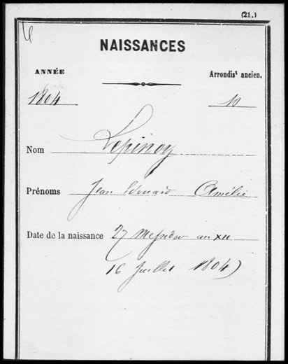
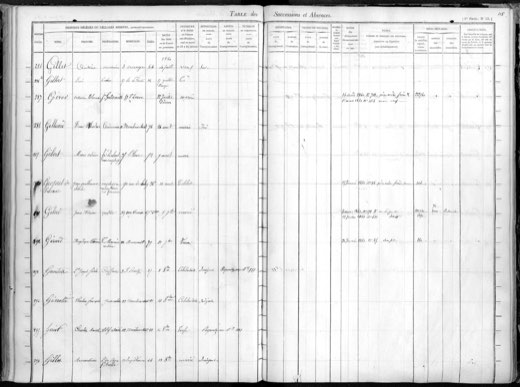
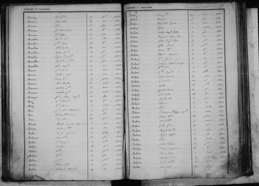
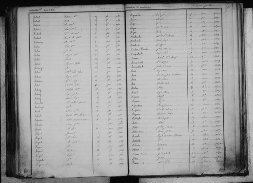
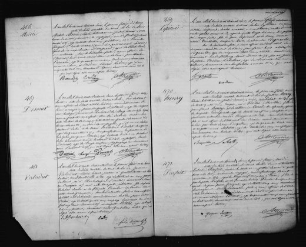
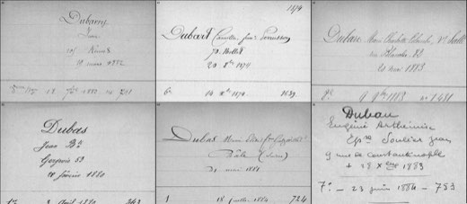

Lieu · Paris
Paris
52 personnes de la base y sont attestées, dans 503 informations.
Arrondissements actuels cités (les arrondissements d'avant 1860 ne correspondent pas aux actuels) :
1er · 42e · 93e · 104e · 15e · 26e · 67e · 38e · 59e · 2610e · 2611e · 312e · 714e · 715e · 416e · 417e · 22
Y sont nés
Paul César GIBERT° 1714?Jean Baptiste GIBERT° 1714?Charles César GIBERT° 1714?Geneviève GIBERT° 1744Marin François GIBERT° 1751 † 1829Marie Catherine FOUCAMPREZ° 1771 † 1827Camille Melchior GIBERT° 1797 † 1866Marie Josephine GINDRE° ~1798? † 1871Louis Charles Ambroise DUBART° 1804 † 1871Jean Édouard Amélie LEPINOY° 1804Marie Octavie GIBERT° 1807 † 1860Jean Louis Alexandre RIGNAULT° 1808 † 1885Adèle Félicie BOSSE° 1825 † 1853Charles Alfred DUBART° 1829 † 1890Edmond DUBART° 1836 † 1903Louis Edouard ORSAY° 1841 † 1903Marie Félicie RIGNAULT° 1847 † 1918Cécile Alexandrine RIGNAULT° 1849Eugène Émile RIGNAULT° 1851Léon DUBART° 1869 † 1944Georges DUBARD° 1873Marcel Jean DUBART° 1876 † 1899Edouard Jean "René" DUBART° 1900 † 1994
S'y sont mariés
Paul César GIBERT° 1714?Marin François GIBERT° 1751 † 1829Marie Barbe BAJOT° 1774? † >1836?Marie Anne Rosalie LEPINOIS OU LEPINOY° ~1776? † 1862Alexandre RIGNAULT° 1780 † 1858Felix Hippolyte BOSSE° 1795? † 1871Camille Melchior GIBERT° 1797 † 1866Marie Françoise Thais DUBART° 1798? † >1867?Marie Josephine GINDRE° ~1798? † 1871Louis Charles Ambroise DUBART° 1804 † 1871Marie Octavie GIBERT° 1807 † 1860Jean Louis Alexandre RIGNAULT° 1808 † 1885Adèle Félicie BOSSE° 1825 † 1853Charles Alfred DUBART° 1829 † 1890Edmond DUBART° 1836 † 1903Marie Félicie RIGNAULT° 1847 † 1918Léon DUBART° 1869 † 1944Solange GASNIER° 1879 † 1970?Jean Baptiste Louis DANINIFélix FAUQUETEuchariste Eugène SALLE† 1843?François GIBERT† 1787Marie Charlotte Colombe DUBART† 1883Marie Marguerite DUBOISAdrien FOUCAMPREZ
Y ont demeuré
Marie Barbe BAJOT° 1774? † >1836?Alexandre RIGNAULT° 1780 † 1858Camille Melchior GIBERT° 1797 † 1866Louis Charles Ambroise DUBART° 1804 † 1871Jean Louis Alexandre RIGNAULT° 1808 † 1885Adèle Félicie BOSSE° 1825 † 1853Edmond DUBART° 1836 † 1903Marie Félicie RIGNAULT° 1847 † 1918Léon DUBART° 1869 † 1944Solange GASNIER° 1879 † 1970?Edouard Jean "René" DUBART° 1900 † 1994Louis-Alexandre BLIN DE BOURDONFrançois Emile RIGNAULT† 1895Euchariste Eugène SALLE† 1843?(Madame, prénom inconnu) DUBART
Y ont travaillé
Paul César GIBERT° 1714?Jean Baptiste GIBERT° 1714?Charles César GIBERT° 1714?Marin François GIBERT° 1751 † 1829Camille Melchior GIBERT° 1797 † 1866Louis Charles Ambroise DUBART° 1804 † 1871Marie Octavie GIBERT° 1807 † 1860Jean Louis Alexandre RIGNAULT° 1808 † 1885Charles Alfred DUBART° 1829 † 1890Edmond DUBART° 1836 † 1903Léon DUBART° 1869 † 1944Jeanne Augustine BARON MARCHAL° 1873 † 1922Louis-Alexandre BLIN DE BOURDONDavid BANDERALIEuchariste Eugène SALLE† 1843?Louis Armand GIBERTFrançois GIBERT† 1787Marie Charlotte Colombe DUBART† 1883(Madame, prénom inconnu) DUBART
Y sont morts
Paul César GIBERT° 1714?Marin François GIBERT° 1751 † 1829Marie Catherine FOUCAMPREZ° 1771 † 1827Marie Anne Rosalie LEPINOIS OU LEPINOY° ~1776? † 1862Alexandre RIGNAULT° 1780 † 1858Felix Hippolyte BOSSE° 1795? † 1871Camille Melchior GIBERT° 1797 † 1866Marie Françoise Thais DUBART° 1798? † >1867?Marie Josephine GINDRE° ~1798? † 1871Louis Charles Ambroise DUBART° 1804 † 1871Jean Édouard Amélie LEPINOY° 1804Marie Octavie GIBERT° 1807 † 1860Jean Louis Alexandre RIGNAULT° 1808 † 1885Adèle Félicie BOSSE° 1825 † 1853Charles Alfred DUBART° 1829 † 1890Edmond DUBART° 1836 † 1903Marie Félicie RIGNAULT° 1847 † 1918Léon DUBART° 1869 † 1944Jeanne Augustine BARON MARCHAL° 1873 † 1922Solange GASNIER° 1879 † 1970?Marie DOLHAIN† 1790?Hippolyte Félix BOSSɆ 1849François GIBERT† 1787François Emile RIGNAULT† 1895Marie Charlotte Colombe DUBART† 1883
Y apparaissent
Paul César GIBERT° 1714?Jean Baptiste GIBERT° 1714?Charles César GIBERT° 1714?Geneviève GIBERT° 1744Marin François GIBERT° 1751 † 1829Marie Catherine FOUCAMPREZ° 1771 † 1827Marie Barbe BAJOT° 1774? † >1836?Marie Anne Rosalie LEPINOIS OU LEPINOY° ~1776? † 1862Christine Geneviève GIBERT° ~1777Benoît Charles César GIBERT° ~1779Alexandre RIGNAULT° 1780 † 1858Felix Hippolyte BOSSE° 1795? † 1871Camille Melchior GIBERT° 1797 † 1866Marie Françoise Thais DUBART° 1798? † >1867?Marie Josephine GINDRE° ~1798? † 1871Louis Charles Ambroise DUBART° 1804 † 1871Jean Édouard Amélie LEPINOY° 1804Marie Octavie GIBERT° 1807 † 1860Jean Louis Alexandre RIGNAULT° 1808 † 1885Adèle Félicie BOSSE° 1825 † 1853Charles Alfred DUBART° 1829 † 1890Edmond DUBART° 1836 † 1903Marie Félicie RIGNAULT° 1847 † 1918Léon DUBART° 1869 † 1944Jeanne Augustine BARON MARCHAL° 1873 † 1922Marcel Jean DUBART° 1876 † 1899Solange GASNIER° 1879 † 1970?Edouard Jean "René" DUBART° 1900 † 1994(pharmacien, prénom inconnu) DUBARTDavid BANDERALICharles DUBARTEstienne FÉGUINEuchariste Eugène SALLE† 1843?Marie DOLHAIN† 1790?Benoît BRONFrançois GIBERT† 1787Maurice Charles DUBARTFrançois Emile RIGNAULT† 1895Marie Marguerite DUBOIS(Madame, prénom inconnu) DUBARTCharles MITOIRE
Documents














Adresses
- 30 faubourg PoissonnièreMarie DUBART vérifié
- 104 faubourg PoissonnièreLouis DUBART non résolu
- paroisse Saint-Roch, rue Saint-HonoréGeneviève GIBERT 16 décembre 1744 vérifié ; Geneviève GIBERT 16 décembre 1744 vérifié ; Marin GIBERT 24 août 1751 vérifié
- rue Saint-HonoréFrançois GIBERT 24 août 1751 vérifié
- Saint-Roch)Charles GIBERT 12 octobre 1787 vérifié
- rue Plâtrière, Saint-Eustache)Jean GIBERT 12 octobre 1787 vérifié
- Saint-Barthélemy)Louis GIBERT 12 octobre 1787 vérifié
- rue Neuve des Petits-ChampsA0598 1789 partiellement vérifié
- 3e arr. ancien, rue du Faubourg-Poissonnière 31Camille GIBERT 18 août 1797 vérifié
- 31 boulevard Bonne-NouvelleMarie FOUCAMPREZ 14 septembre 1827 vérifié ; Camille GIBERT 14 septembre 1827 vérifié
- quai d'OrsayA0590 1827-1829 partiellement vérifié ; A0591 1828 vérifié
- rue Vivienne 16Louis DUBART 1828 non résolu ; Louis DUBART 4 octobre 1828 vérifié
- rue Neuve-d'Artois 31David BANDERALI 1829 vérifié
- rue Vivienne 9Louis DUBART, Euchariste SALLE 7 juin 1836 vérifié ; (Madame, DUBART 1837 vérifié ; (Madame, DUBART 1837 non vérifié ; Louis DUBART 13 mars 1843 non vérifié ; Louis DUBART, Euchariste SALLE 30 septembre 1843 vérifié ; Louis DUBART 30 septembre 1843 vérifié
- nouvelle rue Vivienne (salon)(Madame, DUBART 24 mars 1839 vérifié
- salle Herz(Madame, DUBART 14 février 1841 vérifié
- 1 rue ChabannaisA0553 1842 à 1855 non vérifié
- rue de Vendôme 9(pharmacien, DUBART 1851 non vérifié
- 17 rue de MénilmontantAdèle BOSSE 11 février 1853 vérifié
- rue des Petites-Écuries 3Alexandre RIGNAULT 24 janvier 1858 partiellement vérifié
- étude CXI (1 rue de Provence)Marie GIBERT 14 juillet 1860 vérifié
- rue Bleue 35Louis DUBART 26 juillet 1860 vérifié ; Marie GIBERT 9 août 1860 vérifié ; Marie GIBERT 9 août 1860 vérifié
- cimetière de MontmartreMarie GIBERT 11 août 1860 vérifié ; Louis DUBART, Marie GIBERT 6 décembre 1871 vérifié ; Edmond DUBART 13 mai 1903 vérifié ; Marie RIGNAULT 21 février 1918 vérifié
- rue Vivienne 9 et rue Colbert 1Euchariste SALLE 1862 partiellement vérifié
- 104 rue du Faubourg-PoissonnièreCamille GIBERT 30 juillet 1866 vérifié
- rue Beudant 19Marie GINDRE 9 octobre 1871 vérifié ; A0317 10 octobre 1871 vérifié ; Edmond DUBART 10 octobre 1871 non vérifié
- cimetière du Père-LachaiseLouis DUBART 15 octobre 1871 vérifié
- 82 rue BlancheMarie DUBART 20 mai 1883 vérifié ; Marie DUBART 20 mai 1883 vérifié
- 47 rue d'HautevilleFrançois RIGNAULT 15 mars 1895 vérifié ; A0749 15 mars 1895 vérifié
- 3 rue TaitboutLéon DUBART 27 avril 1897 partiellement vérifié
- 28 boulevard Bonne-NouvelleJeanne BARON MARCHAL 4 mai 1922 vérifié
- église Saint-Eugène ; cimetière de MontmartreJeanne BARON MARCHAL 6 mai 1922 partiellement vérifié
Ce qui s'y est passé
473 informations- Un édit de 1712 place la Savonnerie sous le contrôle du contrôleur des Bâtiments du Roi à Paris ; les directeurs deviennent entrepreneurs ; Soufflot en a la tutelle en 1756 partiellement vérifié
- Aucune fiche de baptême reconstitué pour Paul César, Charles Lazare ni Jean Baptiste Gibert n'existe dans le fichier V3E/N 1004 entre 1714 et 1773 recherche infructueuse
- Aucun mariage entre François Gibert et Marie Jeanne Dolhain n'apparaît dans le fichier des mariages reconstitués : les deux seules fiches Dolhain de la liasse V3E/M 317 sont des années 1830-1840 (Étiennette Dolhain en … recherche infructueuse
- Geneviève Gibert est baptisée à Saint-Roch (Paris) le 16 décembre 1744, fille de François Gibert, marchand mercier (« md mercier »), et de Marie-Jeanne Dolhain, sa femme, de la rue Saint-Honoré vérifié
- François Gibert, marchand mercier (« md mercier »), et Marie-Jeanne Dolhain, sa femme, ont déclaré être les parents de Geneviève Gibert en 1744 ; le père était présent et a signé vérifié
- Au baptême de Geneviève Gibert (1744), le parrain est Pierre Neveux, marchand de vin, et la marraine Geneviève Godier [?] vérifié
- Geneviève Gibert (baptisée en 1744) est vraisemblablement la sœur aînée de François Marin Gibert (baptisé en 1751) : mêmes parents nommés (François Gibert, maître mercier, et Marie-Jeanne Dolhain, rue Saint-Honoré, … partiellement vérifié
- L'extrait de baptême de Geneviève Gibert (1744) a été déposé à la reconstitution par la « Cie Lafarge » : c'est la troisième pièce de la famille Gibert-Foucamprez portant ce dépôt, avec les baptêmes de François Marin … vérifié
- Quatre mariages d'un François Gibert avec d'autres épouses que Marie Jeanne Dolhain (× Meunier 1747, × Jouanet 1756, × Laurent 1766, × Incelin 1755) sont cités dans le relevé 6182 : ils ne concernent pas François Gibert … recherche infructueuse
- Le fichier de l'état civil reconstitué contient une fiche de naissance « Bosse, Barthelemy Hippolyte », 22 mars 1749, paroisse Saint-Gervais [?]. non vérifié
- À Paris vers 1750, les marchands merciers formaient le troisième des Six Corps de marchands (drapiers, épiciers, merciers, pelletiers, bonnetiers, orfèvres) vérifié
- L'accès à la maîtrise de mercier impliquait, selon Wikipédia, trois ans d'apprentissage puis trois ans de compagnonnage célibataire, des droits d'entrée, avec exception pour les fournisseurs de la cour … non vérifié
- Le nom Gibert n'apparaît pas dans la section « Maison de Madame la Dauphine » de l'Almanach royal 1751 (texte OCR) recherche infructueuse
- La maison de Madame la Dauphine telle que l'Almanach royal 1751 la donne comprend dame d'honneur (duchesse de Brancas), dames, chapelle, chevalier d'honneur (maréchal de la Fare), premier maître d'hôtel (marquis du … vérifié
- Havard et Vachon (1889) écrivent qu'un nommé Gibert, valet de chambre et tapissier de madame la Dauphine, obtint la fonction d'inspecteur de la Savonnerie après la mort de Barbier en 1751 partiellement vérifié
- Le Gibert de Havard (A0628) est François Gibert, maître mercier et officier de Madame la Dauphine en 1751 non vérifié
- Naissance (Paris, Saint Roch) — selon l'arbre transmis non vérifié
- François Marin Gibert, né le 23 août 1751, est baptisé le 24 août 1751 à Saint-Roch (Paris) vérifié
- François Marin Gibert est fils de François Gibert et de Marie Jeanne Dolhain, son épouse, de la paroisse Saint-Roch, rue Saint-Honoré vérifié
- En 1751, François Gibert, père de François Marin, est maître mercier et officier de Madame la Dauphine vérifié
- Au baptême de François Marin Gibert (1751), le parrain est Marin de La Motte, bourgeois de Paris, rue des Deux-Écus (paroisse Saint-Eustache), et la marraine Marie Magdeleine Françoise Collot, fille, demeurant rue … vérifié
- Un Gibert est inspecteur de la Savonnerie à des dates documentées en 1751 (Havard), 1757 et 1777 (Soufflot) ; François Gibert est dit inspecteur de la manufacture des tapis de la Couronne dite de la Savonnerie, vivant, … non vérifié
- La Savonnerie compte vers 1751 vingt ouvriers, neuf apprentis, l'entrepreneur, l'inspecteur, un chapelain, un concierge et un portier … partiellement vérifié
- Aucun mariage Gibert × Marie Marguerite R… ni Paul César, Charles Lazare, Jean Baptiste, Geneviève, n'est dans V3E/M 431 avant 1795 recherche infructueuse
- Un inventaire « Gibert Guillaume + » (1756, étude LXVI) et un Guillaume Toussaint Gibert (× Fontenilliat, cité en 1807 à l'étude CVIII) sont des homonymes possibles du notaire Guillaume Gibert (étude CVIII, 1796) … non résolu
- Le 18 juin 1757 environ, Soufflot écrit à Marigny qu'il s'est informé auprès de M. Gibert pour la fourniture de banquettes et de portières de la Savonnerie destinées à Saint-Hubert … vérifié
- Le Garde-Meuble de la Couronne s'installe en 1758 à l'hôtel de Conti, puis à l'hôtel des Ambassadeurs extraordinaires, et en 1772 dans le bâtiment de la place Louis XV … partiellement vérifié
- Aucune fiche de décès reconstitué pour un François Gibert mort entre 1760 et 1790 n'est dans V3E/D 639 (tranche jusqu'à 1814) recherche infructueuse
- Le « M. Gibert » des volumes 1777-1779 (cour de l'Orangerie) est le compositeur de la musique des Trois Sultanes ; la notice BnF donne un compositeur Paul-César Gibert (1717-1787) de Soliman II ou les Trois Sultanes … non vérifié
- Un mariage Legrand Jean Pierre × Gibert Geneviève est cité dans le répertoire du notaire Garcerand le 16/04/1765 (cote RE/XC/7) : homonyme possible de Geneviève Gibert baptisée à Saint-Roch en 1744 non résolu
- Marie Catherine Foucamprez, née le 3 mars 1771, est baptisée le même jour à Saint-Sulpice (Paris) vérifié
- Marie Catherine Foucamprez est fille d'Adrien Foucamprez et de Catherine Colin, son épouse vérifié
- Au baptême de Marie Catherine Foucamprez (1771), le parrain est François Étienne Alexis Foucamprez, la marraine Marie Madeleine Dettous [?], épouse du parrain ; le père est présent vérifié
- Naissance (Paris) — selon l'arbre transmis non vérifié
- Le mariage de Louis Charles Ambroise Dubart et de Marie Octavie Gibert n'est pas dans le fichier des mariages reconstitués de Paris, ni au nom Gibert (fiches 1772-février 1841), ni au nom Dubart (liasse entière) recherche infructueuse
- L'Almanach musical de 1776 nomme « Paul-César Gibert » comme auteur du Mélange musical (partitions, « chez l'Auteur ») et « P. C. Gibert » comme auteur de la musique de la Traduction de Catulle vérifié
- Un Jean Baptiste Gibert marié à Marie Geneviève Raison (contrat ou mariage du 22/05/1776, étude XCI) et un inventaire « Gibert Jean Baptiste » du 10/01/1785 (étude XCI) sont cités dans le relevé 6182 : homonymes … non résolu
- Les volumes de l'Almanach musical de 1777, 1778 et 1779 listent un « Gibert, cour de l'Orangerie » dans les mêmes catégories (auteurs, chant, clavecin pour l'accompagnement, composition) … vérifié
- Le visiteur général des postes de 1778 ne comprend pas de Gibert (Dupleſſis, Le Brun, Jacquesson de la Forest) recherche infructueuse
- Aucun Gibert aux Postes dans les Almanachs royaux de 1780 et de 1781 (Visiteurs généraux : Duplessis, Le Brun, Jacquesson de la Forest … partiellement vérifié
- Les merciers avaient le droit d'« enjoliver » les marchandises qu'ils vendaient mais non de les fabriquer (Encyclopédie méthodique, 1783) non vérifié
- L'Almanach musical de 1783 liste un « Gibert, à la Manufacture royale de la Savonnerie, près Chaillot » dans quatre rubriques : auteurs ou compositeurs, maîtres de chant, maîtres de clavecin, maîtres d'accompagnement et … vérifié
- Le musicien « Gibert » de la Savonnerie en 1783 est le « professeur de musique » et inspecteur de la Savonnerie de l'avis de 1790 (Paul César) non vérifié
- Dans l'Almanach royal de 1783, un « M. Gibert, au Luxembourg » est l'un des Visiteurs généraux des Postes vérifié
- Dans l'Almanach royal de 1783, un « M. Gibert, à l'hôtel des Postes, rue Plâtrière » est le Caissier des Envois d'argent vérifié
- Le Visiteur général Gibert des almanachs 1783-1789 est Charles César (lu d'abord « Lazare ») ; le Caissier des Envois d'argent Gibert est Jean Baptiste (titres et adresses donnés à ces deux frères dans l'avis du … partiellement vérifié
- En 1784 les deux fonctions (Visiteur général ; Caissier des Envois d'argent) portent la même adresse « M. Gibert, rue neuve des Capucines » vérifié
- Paul César Gibert est mort au plus tard le 12 octobre 1787 : l'avis de parents de ce jour le dit « défunt », sa femme « à présent veuve » et enceinte d'un enfant posthume … vérifié
- Le 12 octobre 1787, devant deux notaires du Roi à Paris, les parents et amis de Christine Geneviève Gibert (10 ans), de Benoist Charles César Gibert (8 ans) et de l'enfant posthume dont leur mère est enceinte émettent … vérifié
- Le 12/10/1787, Christine Geneviève Gibert est « âgée de dix ans » et Benoist Charles César Gibert « âgé de huit ans » vérifié
- Au 12/10/1787, Marie Marguerite Dubois, veuve de Paul César Gibert, est enceinte d'un enfant posthume ; elle demeure à Monceaux près Paris (paroisse de Clichy), est désignée tutrice des deux mineurs et, après son … vérifié
- Le 12 octobre 1787, François Gibert, « valet de chambre du Roy [et ?] de Madame sœur du Roy » et « inspecteur de la manufacture royale des tapis de la Couronne dite de la Savonnerie, établie à Chaillot », y demeurant, … vérifié
- François Gibert, « ayeul paternel » des mineurs en 1787, est le père de Paul César Gibert, inspecteur de la Savonnerie « en survivance du sieur son père » partiellement vérifié
- En 1787, Paul César Gibert est « professeur de musique, officier de la chambre de Madame, sœur du Roy » et « inspecteur de la manufacture royale de la Savonnerie, en survivance du sieur son père » vérifié
- Charles César Gibert (et non « Lazare ») est, en 1787, « visiteur général des Postes et relais de France », demeurant à Paris rue Neuve-des-Petits-Champs (paroisse Saint-Roch), « oncle paternel » des mineurs, élu … vérifié
- En 1787, Jean Baptiste Gibert est « caissier des remises et envois d'argent pour la province », demeurant à l'hôtel des Postes, rue Plâtrière (paroisse Saint-Eustache), « oncle paternel » des mineurs vérifié
- En 1787, Louis Armand Gibert est « marchand orfèvre à Paris », demeurant quai des Orfèvres (paroisse Saint-Barthélemy), « oncle à la mode de Bretagne » des mineurs vérifié
- Benoît Bron (« directeur général du Département des Postes [?] », hôtel des Postes, rue Plâtrière), Charles Mitoire (visiteur des Postes, rue Plâtrière, Saint-Eustache) et Estienne Féguin (maître apothicaire, rue … vérifié
- Ni Marie Jeanne Dolhain ni François Marin Gibert ne sont nommés ni représentés dans l'avis de parents du 12/10/1787 recherche infructueuse
- François Gibert est mort entre le 12/10/1787 (présent et comparant à l'avis de parents) et le 22/06/1790 (dit défunt, Marie Jeanne Dolhain étant sa veuve) partiellement vérifié
- Un inventaire de « Paul Cesar GIBERT + » est cité dans le répertoire du notaire Guillaume Henri Picquais (étude LVI) à la date du 23/10/1787 (cote RE/LVI/14) partiellement vérifié
- L'inventaire du 23/10/1787 (étude Picquais) est l'inventaire après décès du Paul César Gibert de l'avis du 12/10/1787 ; Paul César est donc mort peu avant le 12/10/1787 partiellement vérifié
- En 1788 et 1789, un « M. Gibert, rue Neuve des Petits-Champs » est Visiteur général et un « M. Gibert, hôtel des Postes » est Caissier des Envois d'argent vérifié
- L'Almanach royal de 1789 donne, parmi les « Visiteurs Généraux » de l'Administration générale des Postes aux lettres, « M. Gibert, rue Neuve des Petits-Champs » (sans prénom) ; le caissier y est « M. Sompion [?] » partiellement vérifié
- Le « M. Gibert, rue Neuve des Petits-Champs » visiteur général des postes de l'Almanach royal 1789 est probablement Charles César Gibert (lu d'abord « Lazare »), « visiteur général des postes et relais de France » en … partiellement vérifié
- Aucun personnel de la Savonnerie (inspecteur) n'est lisible dans l'Almanach royal 1789 (OCR) ; seul le directeur Pierre est cité recherche infructueuse
- L'Almanach royal de 1789 liste au Garde-Meuble « M. Capin, Tapissier du Roi » ; aucun Gibert valet de chambre tapissier dans les Almanachs royaux de 1769, 1780, 1789 recherche infructueuse
- Un décès « Gibert Marie Marguerite », 8 août 1789, ancienne paroisse Sainte-Marguerite, est indexé à V3E/D 639 (img 20) ; identité avec la veuve de Paul César Gibert non vérifiée et peu probable non vérifié
- Aucun « Jean Baptiste Gibert » ni aucun caissier Gibert des postes n'a été retrouvé dans le texte OCR des Almanachs royaux de 1789 (deux numérisations) et de 1792 contredit
- Le père des mineurs de l'avis du 22/06/1790 est lu « Paul César Gibert » (relecture F16 bis) : il porte le même nom que le compositeur Paul-César Gibert de l'Almanach musical de 1776 et de la notice BnF (1717-1787) … non vérifié
- Hypothèse (b) : les mineurs Gibert de 1790 seraient les enfants de François Marin Gibert et d'une première épouse décédée avant 1790 (François Marin ne se remarie qu'en 1793) réfuté
- Le 22 juin 1790, devant Antoine Omer Talon [?], lieutenant civil au Châtelet de Paris, sont comparus les parents et amis de deux enfants mineurs Gibert, Benoît Charles César et Christine Geneviève (avis de parents, AN … vérifié
- Les deux enfants mineurs Gibert de l'avis de 1790, Benoît Charles César et Christine Geneviève (lus d'abord « Benoit [?] Charles César » et « Célestin [?] Germain [?] »), sont les enfants de feu Paul César Gibert et de … vérifié
- Paul César Gibert est désigné, dans l'avis du 22/06/1790, comme « professeur de musique, officier de la chambre de Madame et inspecteur de la manufacture royale de la Savonnerie » vérifié
- Paul César Gibert est défunt au 22 juin 1790 (« feu » ; ses enfants sont mineurs de lui et leur mère est sa veuve) vérifié
- Marie Marguerite Dubois (lue d'abord « Rabis »), épouse de Paul César Gibert, est sa veuve en 1790 et la tutrice de leurs enfants mineurs, nommée par l'avis de parents de 1787 (12/10/1787, présenté le 19/10/1787) vérifié
- François Gibert, époux de Marie Jeanne Dolhain, est défunt au 22 juin 1790 (Marie Jeanne Dolhain y est dite sa veuve) vérifié
- En 1790, François Gibert, dit défunt, est qualifié de « valet de chambre tapissier du Roi » et d'inspecteur de la manufacture royale de la Savonnerie (qualités qu'il portait de son vivant en 1787, voir A0665) partiellement vérifié
- Marie Jeanne Dolhain est dite en 1790 « veuve de François Gibert » et aïeule paternelle des mineurs Gibert vérifié
- Charles César Gibert (lu d'abord « Lazare ») est, en 1790, « valet de chambre [?] du Roi et visiteur général des postes et relais de France » et « oncle » des mineurs Gibert (« oncle paternel » selon l'index, et selon … vérifié
- Jean Baptiste Gibert est « caissier des postes » et « oncle paternel » des mineurs Gibert (avis du 22/06/1790) vérifié
- L'avis du 22/06/1790 a pour objet le partage (ou la licitation) de la succession de François Gibert et de sa communauté avec Marie Jeanne Dolhain, dont les mineurs sont héritiers à la place de leur père … partiellement vérifié
- François Marin Gibert (P8800) n'apparaît pas dans la liste des comparants lue (lignes 14-25) de l'avis du 22/06/1790 recherche infructueuse
- Marie Jeanne Dolhain est morte entre le 22 juin 1790 et le 24 novembre 1796, et l'inventaire de 1796 est son inventaire après décès non vérifié
- Chaque action de la Caisse Lafarge (90 livres) reposait sur une « tête » (l'assuré) dont la vie conditionnait la rente ; à la mort de la tête le capital revenait à la tontine … vérifié
- La provenance Caisse Lafarge des extraits de baptême de François Marin Gibert (1751) et de Marie Catherine Foucamprez (1771) et du décès de celle-ci (1827) rend cohérente l'hypothèse A0566 (ils auraient été « têtes » de … non vérifié
- S'ils avaient été têtes à la souscription (1791-1793), François Marin (né en 1751) et Marie Catherine (née en 1771) relèveraient de la classe « Jeunes » et Geneviève (baptisée en 1744) de la classe « Vieillards » non vérifié
- La Caisse Lafarge, tontine fondée le 21 mars 1791 par J. Lafarge et L.-C. Mitouflet, a été confiée à l'Administration municipale de Paris par décret du 1er avril 1809 et s'est éteinte à la mort de la dernière tête, le … vérifié
- La sous-série D6J des Archives de Paris, dont relève la table des mariages de Notre-Dame-de-Bonne-Nouvelle 1803-1820 (D6J 1209), est celle des registres de catholicité (doubles) déposés par l'archevêché de Paris … partiellement vérifié
- Dans le fichier des mariages reconstitués (liasse Dubart entière), aucun homme Dubart ne se marie à Paris avant le 9 avril 1840 … partiellement vérifié
- Rapport de Restout (décembre 1792) : dépenses annuelles de la Savonnerie : ouvriers 22 916 livres, matières 8 770 livres, chapelain 1 300 livres, inspecteur 1 000 livres, portier 400 livres plus 200 d'habillement … partiellement vérifié
- L'Almanach royal de 1792 imprime pour la Poste de Paris seulement les administrateurs du Directoire ; l'Almanach national de l'an III donne une Agence des Postes de six agents nationaux … partiellement vérifié
- Un mariage Danini × Gibert Genevieve Christine est cité dans le répertoire du notaire Billard le 05/09/1793 (cote RE/LXXIV/3) partiellement vérifié
- Marin François Gibert et Marie Catherine Foucamprez se sont mariés le 18 frimaire an II (8 décembre 1793) « à la ci-devant municipalité de Paris » partiellement vérifié
- Le mariage de François Marin Gibert et de Marie Catherine Foucamprez (18 frimaire an II) n'est pas dans le fichier des mariages reconstitués : aucune fiche Foucamprez (liasse V3E/M 388) ni aucune fiche Gibert de 1793 … recherche infructueuse
- Aucun acte de mariage Gibert × Foucamprez n'a été trouvé parmi les actes reconstitués du 18 frimaire an II (8/12/1793) : liasse 5Mi1 2008 (mariages du 02 au 09/12/1793) et liasse des mariages déclassés 5Mi1 2339 ne … recherche infructueuse
- Un inventaire est dressé le 24 novembre 1796 (4 frimaire an V) par le notaire Guillaume Gibert (étude CVIII), au nom de « Gibert » (prénom non relevé) et de son conjoint ou sa conjointe Marie Jeanne Dolhain (répertoire … partiellement vérifié
- Camille Melchior Gibert, né à Paris (3e) le 1er fructidor an V (18/08/1797), est fils de François Marin Gibert, pensionnaire de l'État, et de Marie Catherine Foucamprez, décédée à Paris (5e) le 14/09/1827 vérifié
- Camille Melchior Gibert est né à Paris le 18 août 1797 (et non le 18 septembre) partiellement vérifié
- Dans une brochure qu'il publie en juin 1833, le Dr C.-M. Gibert se présente lui-même comme « né à Paris le 18 août 1797 » vérifié
- Wikidata donne pour Camille-Melchior Gibert deux dates de naissance (18 septembre et 18 août 1797), né dans l'ancien 3e arrondissement de Paris, mort le 30 juillet 1866 non vérifié
- Camille Melchior Gibert naît le 1er fructidor an V (18 août 1797) à 5 h du matin, rue du Faubourg-Poissonnière n° 31, 3e arrondissement ancien de Paris (division Poissonnière) vérifié
- Camille Melchior est fils de François Marin Gibert, « employé à la Poste », et de Marie Catherine Foucamprez, son épouse vérifié
- Témoins de la naissance de 1797 : Jean Claude Paris, 62 ans, employé, domicilié rue des Vieux-Augustins n° 275 (division du Mail) ; Charlotte Aimée Lique [?], 33 ans, rentière, domiciliée dans la maison de l'accouchée vérifié
- Naissance : née à Paris selon son acte de décès — selon l'arbre transmis non vérifié
- Le fichier de l'état civil reconstitué contient une fiche de naissance « Rignault, Alexandre », 28 brumaire an XII [20/11/1803], 11e arrondissement ancien. non vérifié
- La Marie Anne Rosalie Lepinois mère de Jean Édouard Amélie (1804) est P7060, épouse de Rignault partiellement vérifié
- Jean Édouard Amélie est né à Paris le 27 messidor an XII (16 juillet 1804) à deux heures de l'après-midi, rue Saint-Benoît n° 9 (10e arr. ancien), fils de Marie Anne Rosalie Lepinois vérifié
- En juillet 1804, Marie Anne Rosalie Lepinois est couturière et dit née à Noyon le 4 novembre 1776 vérifié
- L'acte de naissance de 1804 ne nomme pas de père vérifié
- Aucun acte civil de mariage Gibert × Foucamprez / Foucamprer n'a été vu parmi les chemises lues de la liasse reconstituée 5Mi1 2014 (mariages du 07/11/1804 au 19/11/1804, 47 images) recherche infructueuse
- Le couple François Marin Gibert × Marie Catherine Foucamprer de la table de 1804 est le couple François Marin Gibert (P8800) × Marie Catherine Foucamprez (P8802) de la base non vérifié
- François Marin Gibert et Marie Catherine « Foucamprer » ont fait célébrer leur mariage religieux à la paroisse Notre-Dame-de-Bonne-Nouvelle le 17 novembre 1804 (inscription à la table des mariages paroissiaux) partiellement vérifié
- Alexandre Rignault et Marie Anne Rosalie Lepinoy se marient à Paris le 21/08/1807. partiellement vérifié
- La fiche de mariage du 21/08/1807 (Rignault × Lepinoy) porte l'arrondissement ancien 11e partiellement vérifié
- L'acte de mariage Rignault × Lepinoy du 21/08/1807 (11e arr. ancien) n'a pas été retrouvé dans le haut des pages de la fiche 5Mi1 2016 n° 736160 (05-22/08/1807) recherche infructueuse
- Marie Octavie Gibert est née entre le 10/08/1807 et le 04/02/1808 si le baptême du 4 février 1808 est le sien (A0690) partiellement vérifié
- Marie Octavie Gibert est née entre le 10/08/1807 et le 09/08/1808 (fourchette tirée de l'âge déclaré, 52 ans, au décès du 09/08/1860) non vérifié
- La rue du Sépulcre (paroisse Saint-Sulpice) est l'actuelle rue du Dragon (6e) ; le nom de « Sépulcre » vient des chanoines du Saint-Sépulcre (propriété au début du XVe siècle, manuscrit de 1636), et les habitants … partiellement vérifié
- Naissance (Paris) — selon l'arbre transmis non vérifié